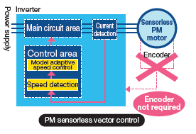
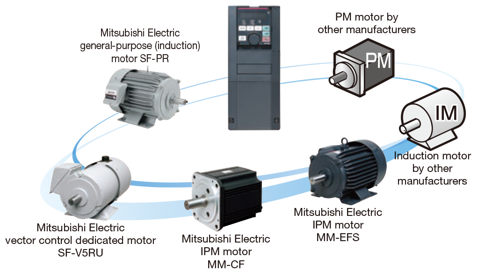
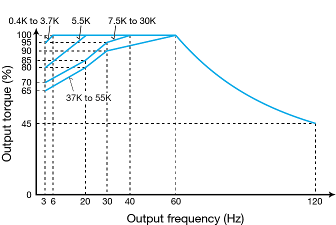
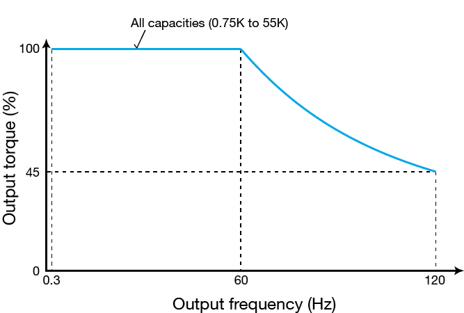
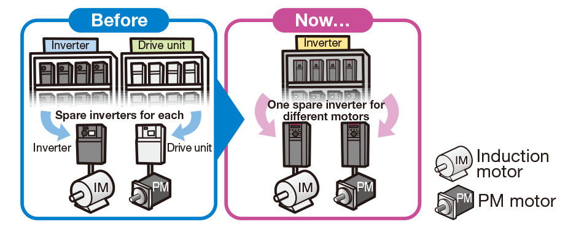

Inverters-FREQROL FR-A800 Series APPROACH TO THE LEADING DRIVE PERFORMANCE

APPROACH TO THE LEADING
DRIVE PERFORMANCE
The new series is equipped with the new state-of-the-art high-speed processor developed by Mitsubishi Electric. With better control performance and response level, safe and accurate operation is assured in a diverse range of applications.
The enhanced Real sensorless vector control and vector control serve the needs of all machinery types.
The vector control is available when a vector control compatible option is installed.
For high quality products
High response
Response speed
Real sensorless vector control 50 Hz*1 ［A700：20Hz］
Vector control 130 Hz*2 ［A700：50Hz］
- *1At 3.7 kW with no load. Differs depending on the load conditions and motor capacity.
-
*2The option (FR-A8AP, FR-A8AL, or FR-A8TP) is required.
Speed response: The speed response indicates how fast the inverter follows the change in the speed command. (The larger value indicates the better speed trackability.)

Line control
Line control is necessary for the machining of elongated products such as paper, thread, wires, all kinds of sheet, and tape. This will respond rapidly to changes in line speed and suppress the occurrences of winding unevenness. This contributes to a steady supply of high-quality products.
Perform ultra-fine processing
High-speed rotation
Operating frequency
Real sensorless vector control and vector control 400Hz ［A700：120Hz］
V/F control 590Hz*3 ［A700：400Hz］
*3According to the review result of the export control order about frequency changers, the upper limit of output frequency was determined to be 590 Hz for standard models.

Machine tool
Cutting-edge machine tools are harder and thinner than ever before to be applicable to diverse new materials.
High-speed rotation is required more than ever before in order to be applicable for fine and precise cutting on hard and difficult-to-grind materials.
Swiftly move heavy weights
High torque at low speed
Starting torque (When at 0.3 Hz)
Real sensorless vector control 200% (ND rating)*4, Vector control 200% (ND rating)*4 (150% of initial setting for 5.5K and higher)
Zero-speed torque
Vector control 200%. (Select HD rating.)*4
Speed control range
V/F control 1:10 (6 to 60 Hz: Driving)
Advanced magnetic flux vector control 1:120 (0.5 to 60 Hz: Driving)
Real sensorless vector control 1:200 (0.3 to 60 Hz: Driving)
Vector control 1:1500 (1 to 1500 r/min: Both driving/regeneration)
*4Refer to here for the multiple rating setting.

Cranes
Cranes are in operation daily at ports carrying fully-laden containers in response to strong demand from all over the world. Our new inverter realizes smooth cargo handling work at low speed and high torque for the slow and stable movements required for heavy objects.
For accurate and stable transport between machines
PM sensorless vector control
- ●What is a permanent magnet (PM) motor?
- A PM motor is a synchronous motor with strong permanent magnets embedded in its rotor. The two major PM motor types are: the interior permanent magnet (IPM) motor with its magnets embedded inside the rotor, and the surface permanent magnet (SPM) motor with its permanent magnets attached on the rotor surface.
- ●What is PM sensorless vector control?
-
The speed and magnetic pole positions, the two essential bits of information to control a PM motor, are detected without a sensor (encoder). The speed detection internally-performed in an inverter enables highly accurate control of a PM motor, almost as accurate as an AC servo system, without the need of a sensor (encoder)*5.
Combining with Mitsubishi Electric MM-CF series IPM motors facilitates aspects of high-level control with no encoder such as “simple positioning”*6 and “zero speed torque”.*5Speed fluctuation ratio: ±0.05% (digital input)
*6Positional accuracy (with no load) of 1.5K and lower: ±1.8°, 2K and higher: ±3.6°
- ●Easy maintenance for sensor (encoder)-less motor
-
- No additional cables means less wiring space required.
- Improved reliability is obtained in unfavorable operating environments. (e.g. high vibration)
- PM motors are usually smaller and lighter than induction motors.

Transfer of circuit boards
The Simple positioning control delivers a precision workpiece, such as a printed substrate, to a precise position.
Transfer of fragile glass substrates can be performed with a highly accurate driving system.
Taking motor performance to the max
Induction motors and magnet motors can be combined freely
- ●The cutting-edge auto tuning function
-
The PM motor auto tuning function, which has been newly developed, enables sensorless operation of other manufacturers' permanent magnet (PM) motors.
Operation with all Mitsubishi Electric induction motors and PM motors, in addition to induction motors and PM motors from other manufacturers*7, is possible. That means you need less motors for spare and stocks.
(With IPM motors other than MM-CF and PM motors manufactured by other companies, starting torque is limited to 50%, and simple positioning control and zero speed torque cannot be used even if tuned.)*7Tuning may not be available depending on its motor characteristics.
 - ●Low speed, high torque realized with SF-PR motor
-
By combining with Mitsubishi Electric's high-performance, energy-saving motor SF-PR, 100% continuous operation is possible from a low speed of 0.3 Hz for inverters of any capacity.
(when using Real sensorless vector control)
SF-JR continuous operation torque characteristics
(Motor input voltage: 200 V)SF-PR continuous operation torque characteristics
(Motor input voltage: 200 V) - ●Sharing the spare inverter
-
One spare inverter is enough for the two types of motors (IM and PM).
